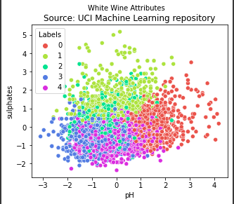

Our first task was to embed charts
The first chart illustrates meat consumption in OECD countries.
My second chart looks at ethereum trading statistics from 2016-2021
Our second task was to embed the original and a corrected version of total IMF loans outstanding
First the original, in nominal terms:
This version shows the total loans outstanding as a fraction of global GDP:
In Conclusion, we see that 1984 is actually the riskiest year, with the highest outstanding loans as % of GDP.
Our third task was to create two charts with embedded data
First, a scatter plot showing the correlation between students enrolled and amount of teachers by district.
By applying a transform in vega, I made a bar chart which shows that the amount of students per teacher is centered at ~ 20.
Our fourth task was to scrape, clean and normalise data from a website
I scraped World Cup winner odds from justbookies and calculated the winning probabilities. By taking aggregated data from several bookmakers, I could get a more robust result.
Our fifth task was to loop on the ONS API to quickly produce 9 time series from a dataset
Our sixth task was to produce a base map and a choropleth map
First, my base map of South America:
Now the Gini Index of each country is embedded in the map, showing Uruguay to be the most equal country in terms of income.
Our seventh task was to produce two charts to support or refute an argument made at the Festival of Economics.
‘Lockdown increased the appeal of crypto - there was a lack of sports betting, people were looking for a rush - this led to the gamification of crypto.’
While we cannot establish causality, limited sports betting led to people seeking similar thrills elsewhere. Hence, it is plausible that more people looking for a rush entered the crypto scene.
Our eighth task was to produce two advanced visualisations
In this regression, there is a positive correlation between the % of English Learners and the % of students qualifying for reduced lunches.
Secondly, I made a heatmap showing the frequency of scorelines in the Premier League (2016-17)
Finally, we were introduced with machine learning and tasked with performing both a supervised and unsupervised learning technique.
My first hyopthesis: Using K-means clustering I can classify wines into distinguished groups with similar properties in each cluster.

To the naked eye, there seem to be loosely defined boundaries but fairly distinct clusters.
My supervised learning hypothesis: Does logistic regression predict whether or not a customer purchases better than a decision tree?
We can see from the confusion matrices that the logistic regression does predict more accurately (74-6) than the decision tree (67-13). The decision tree largely overfits on the training data.